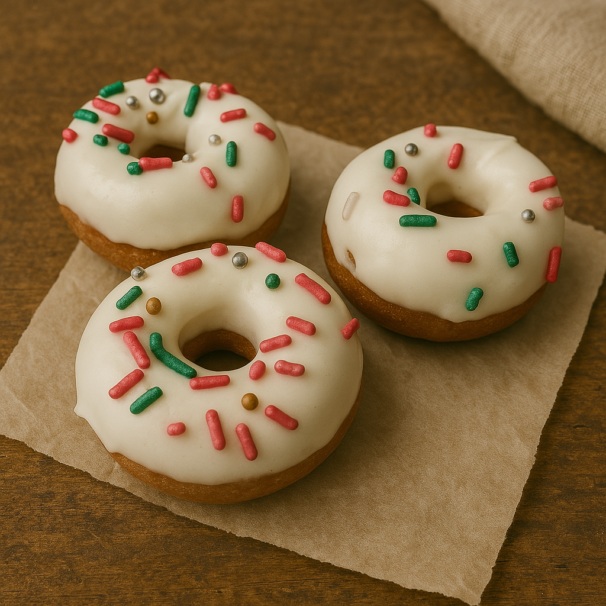
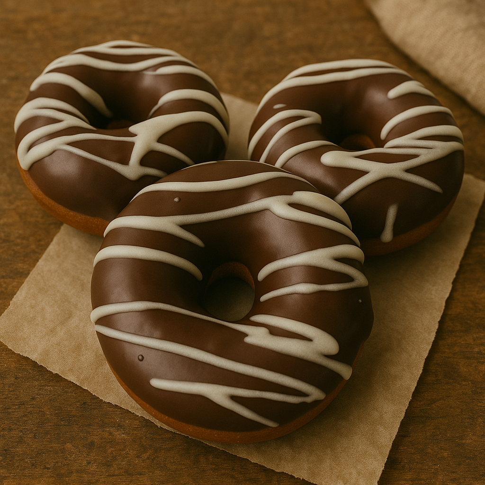

En Ivy Donas preparamos cada una de nuestras donas con ingredientes seleccionados y recetas tradicionales. Cada bocado es una experiencia única que te conecta con el auténtico sabor casero.


¿Prefieres enviarnos un mensaje de WhatsApp? (+598) 9817 7739
Síguenos en Instagram
¡Conoce nuestras últimas creaciones y promociones!
@ivy_donas